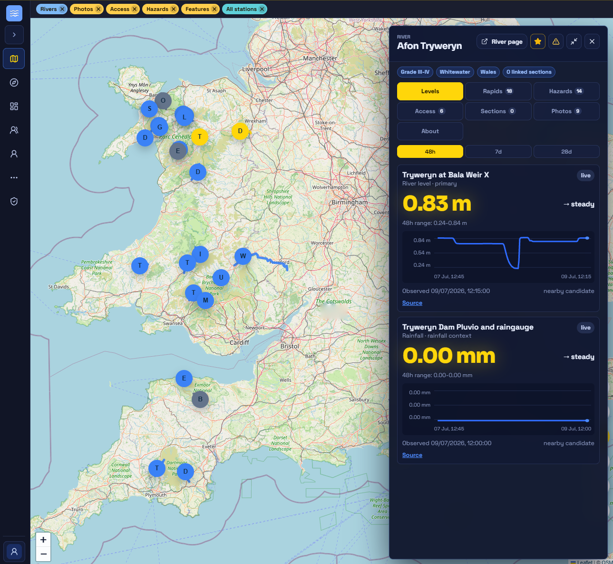

Product
A river-section guide that stays current.
Browse the map, open any river, read today's levels, and see the access, hazards, and photos other paddlers have added — all in one place.


River detail
Open any river, and it's all there.
- Levels first — the live reading, trend, and gauge history for the stretch you're looking at.
- Put-in to take-out — distance, difficulty, rapids, access points and photos, each with the date it was last updated.
- Confirmed by paddlers — every contribution is dated, pinned to a place, and open for others to confirm or dispute.
- Sources and gaps — where each detail came from, and what still needs local confirmation.

Mobile
Built for river-bank use.
The same app on a phone — installable from the browser, with an offline outbox that holds what you add on the bank and syncs it when you're back in signal.


Early access
Try RiverLaunch.app for yourself.
The early-access app is free to use while we build it out with the paddling community. Some content is still being seeded and checked, so expect gaps — and help us fill them.
Screenshots show early-access content — verify river and access details locally before you travel.